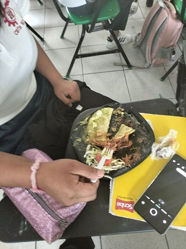
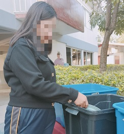

Consumo de alimentos cuidando el medio ambiente:
En la cafetería de nuestra escuela CBTis 187 los alimentos que consumimos nos los proporcionan en platos de plásticos estos después de terminar nuestros alimentos son lavados con agua clorada y desinfectada haci poder volver a ocuparse.

